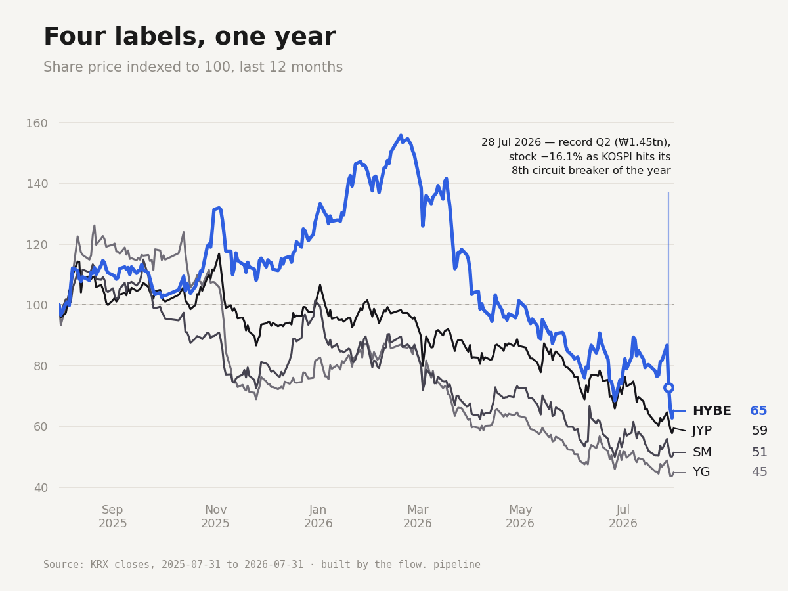

KpopData.fr · pipeline flow.
Le système de données qui produit chaque semaine la newsletter flow. et prépare KpopData.fr.
Huit ans à transmettre des œuvres au public, puis la donnée comme second langage. Je construis des systèmes qui transforment des sources brutes en faits vérifiables, des visuels qui les rendent lisibles, et des jeux qui racontent des histoires.

Le système de données qui produit chaque semaine la newsletter flow. et prépare KpopData.fr.

Un livre dont vous êtes le héros, joué à plusieurs et en asynchrone, illustré de gravures façon Gustave Doré.

Un donjon original construit pour Dark Messiah of Might and Magic, pensé autour de son combat physique.